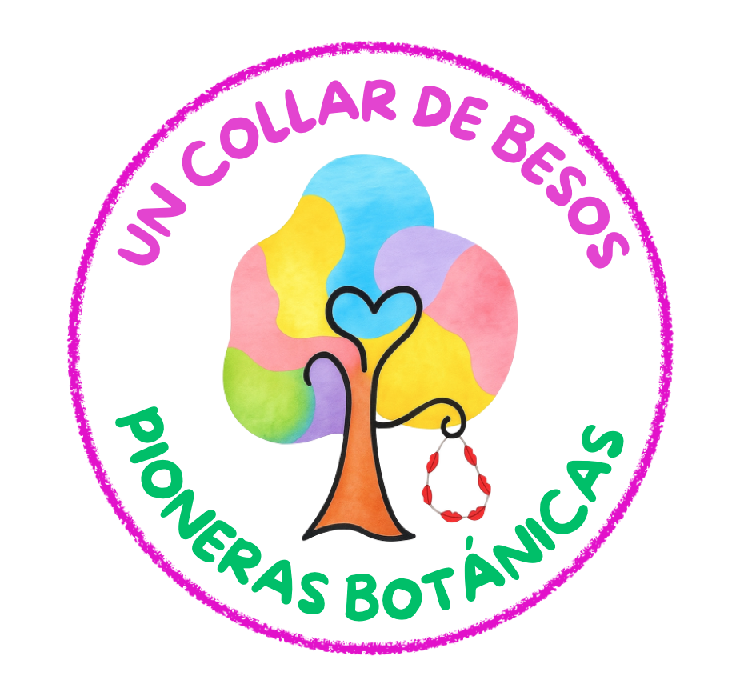

ACTIVIDAD PRINCIPAL

Tras la lectura del cuento Un collar de besos, vamos a trabajar la vida y obra de las primeras mujeres botánicas que estudiaron las plantas y los beneficios que obtenemos de ellas.
Ellas se han encargado de estudiar la flora y la fauna de los entornos naturales. Con las actividades que vamos a desarrollar reconoceremos su gran trabajo durante todos los años que se dedicaron a esta labor, estando en un segundo plano para la sociedad simplemente por el hecho de ser mujeres.
Tal y como hemos comentado anteriormente, la tarea final será el montaje de un museo en el que se expondrán los trabajos-murales elaborados por equipos. Pero, esta será la actividad final. Realizaremos más actividades, en grupo y de forma individual, que nos van a permitir aprender muchísimo sobre ellas.
Encontraremos tareas para elaborar con un carácter de investigación a través de internet y también desarrollaremos murales digitales con la aplicación Canva, además de elaboración de podcasts con la ayuda de nuestros docentes.
Utilizaremos los recursos digitales del aula como los chromebooks, ordenadores, tablets y pizarra digital, dependiendo de lo que tengamos a nuestra disposición en el centro. Pero antes de iniciar nuestro camino digital, es importante que en el próximo apartado tengáis en cuenta ciertas normas de uso de la información obtenida, ya que siempre hay que decir de dónde se obtiene la información y las fotografías que vayas a utilizar para elaborar tus trabajos. Además, es importante recordaros que es necesario proteger nuestra identidad en internet y no dar ningún dato personal.
Si queréis leer Un collar de besos podéis encontrarlo en la página web concorazonvioleta